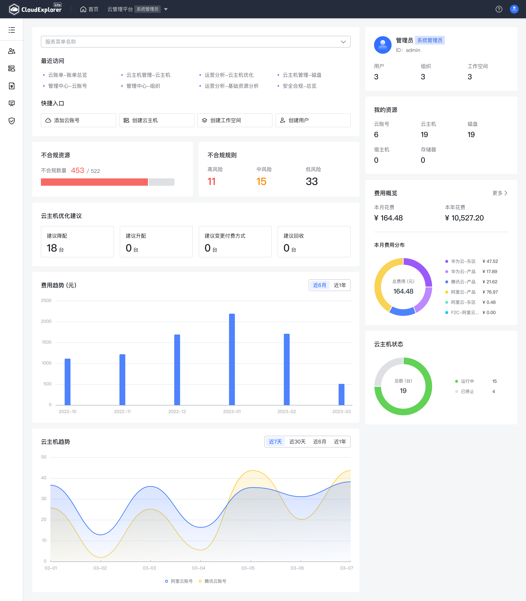

CloudExplorer Lite 支持对接纳管主流的公有云和私有云，提供开箱即用的云主机管理、云账单、运营分析和安全合规等基本功能，同时提供强大的扩展能力来满足企业的定制化需求。

CloudExplorer Lite 支持对接纳管市场上主流的公有云和私有云，包括阿里云、腾讯云、华为云、VMware、OpenStack 等。
CloudExplorer Lite 提供诸多开箱即用的功能，比如云主机管理、云账单、运营分析和安全合规等，满足大部分企业的基本需求。
CloudExplorer Lite 提供强大的多租户体系和模块化能力，可以满足企业的定制化需求。